01
电源启动类
承载设备开关机、启停等核心控制。
统一 TFT 载体下的信息分类、界面框架与场景交互布局规则，建立跨品类清晰、一致且易理解的智能屏体验。
各品类 TFT 屏幕的信息统一分为以下七类，便于组织内容并保持一致的操作逻辑。
承载设备开关机、启停等核心控制。
用于切换设备的工作模式、使用场景或任务类型。
承载用户主要任务，是程序选择和功能操作的核心区域。
用于调节温度、时间、档位、转速等任务参数。
显示运行状态、任务阶段、异常提醒及操作反馈。
通过语音指令完成设备控制、参数调节及信息查询。
为主程序提供增强、辅助或个性化能力，可按需选择。
基于易用性建立 TFT 屏交互的核心体验规则，保障用户体验轻便高效、学习成本更低，并建立跨品类一致的操作体验。
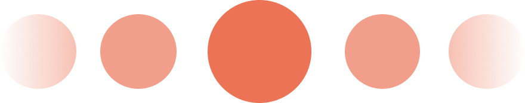
当前操作对象保持明确焦点，同一时刻突出一个主任务，减少信息干扰。
减少页面层级与操作步骤，高频任务优先直达，支持快速返回。
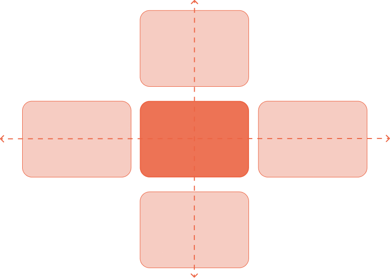
同类功能统一选择与调节方式，保持跨页面、跨场景的交互一致性。
横屏中，左右切换程序或功能，上下选择其详情调节项；竖屏中，两者的操作方向相应对调。
选择选项时，始终突出当前选中项。通过选择、调节与进入详情三个方向，建立统一的 XYZ 交互方式（见下图）。
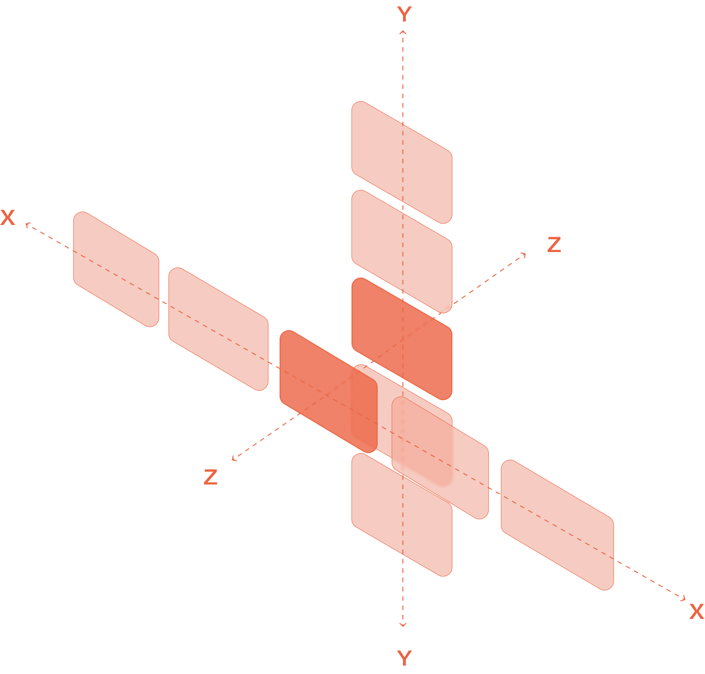
统筹各品类 TFT 载体下的产品信息与核心交互流程，建立从功能选择到任务执行的一致性步骤逻辑，降低跨产品学习成本。
程序选择 / 功能模块选择页
程序或功能模块的详情 / 调节页
程序或子模块功能运行页
根据横向与竖向屏幕比例，建立一致的系统状态、模式分类、内容区与辅助操作区域。
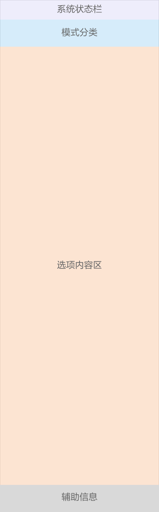
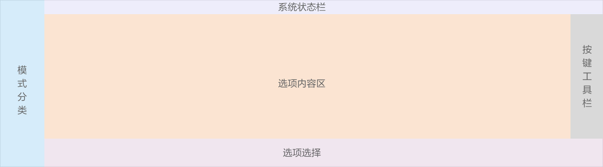
TFT 屏幕及 TFT+LED 组合屏幕的位置，应与产品中心轴、核心结构或主要操作区域相对应。
蒸烤箱
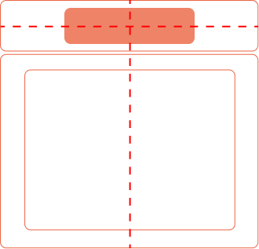
洗衣机
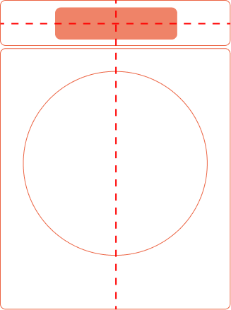
空调竖屏
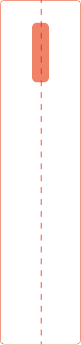
空调横屏
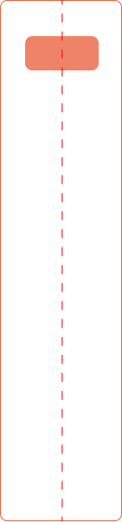
双塔式空调
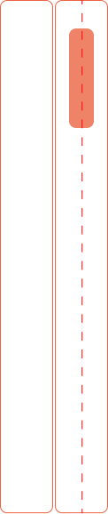
冰箱
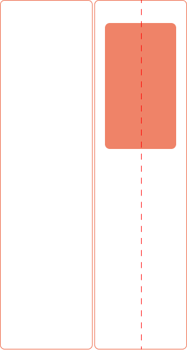
以 AI 和标准模式作为首层入口，建立一致的交互起点。
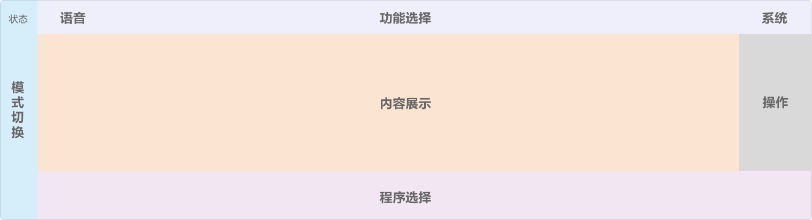
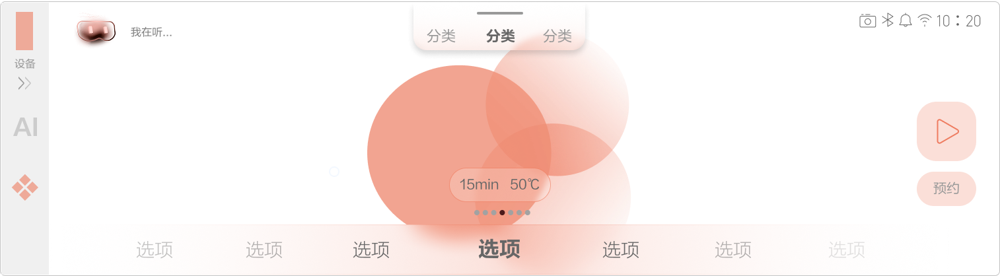
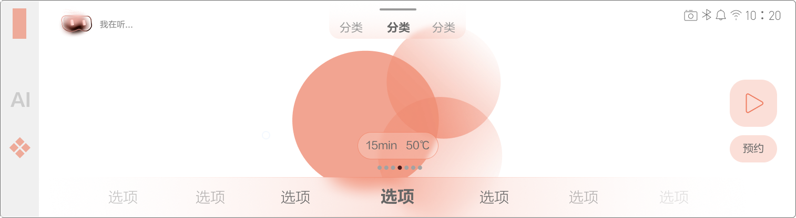
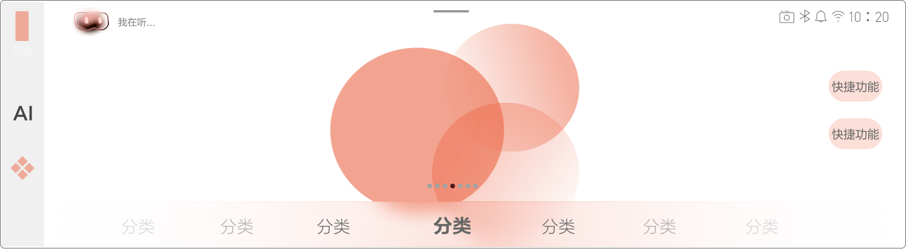
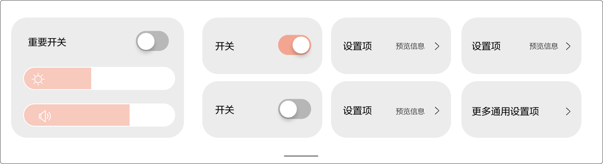
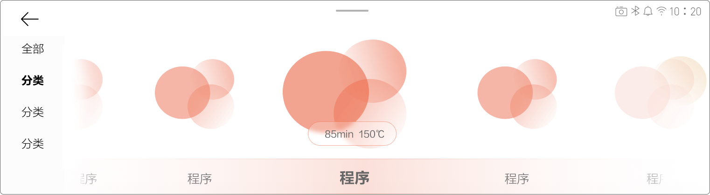
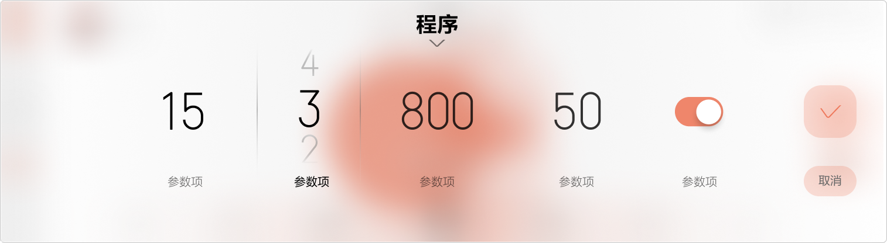
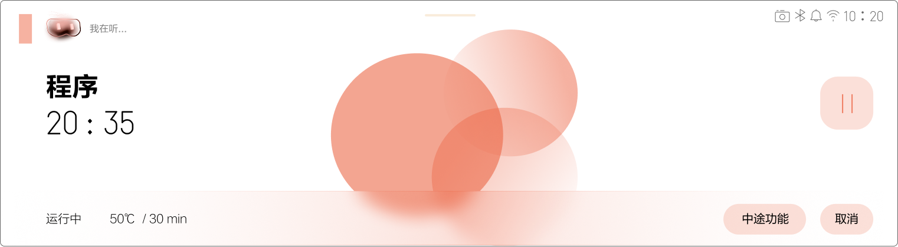
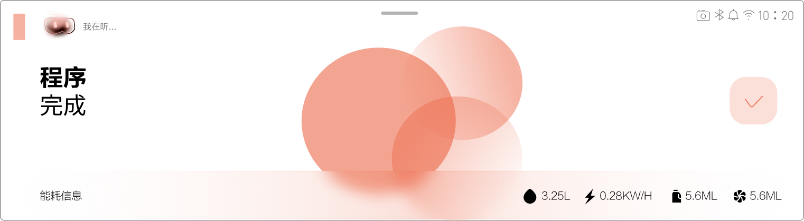
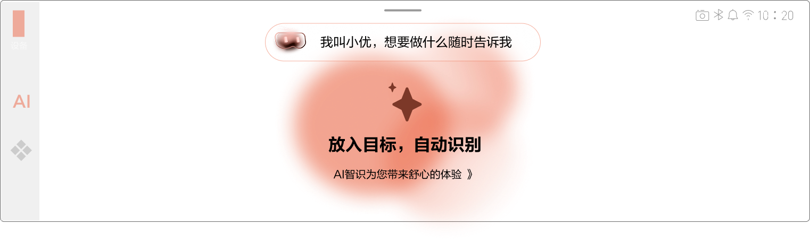
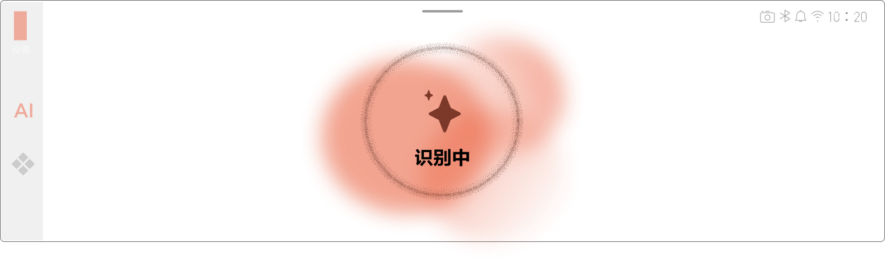
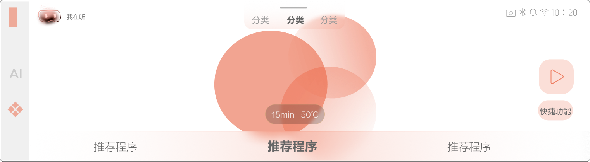
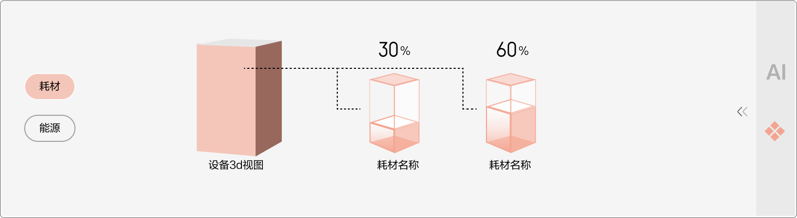
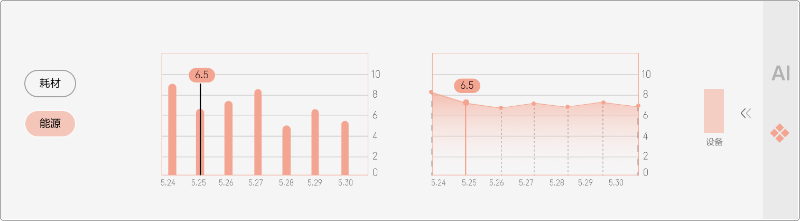
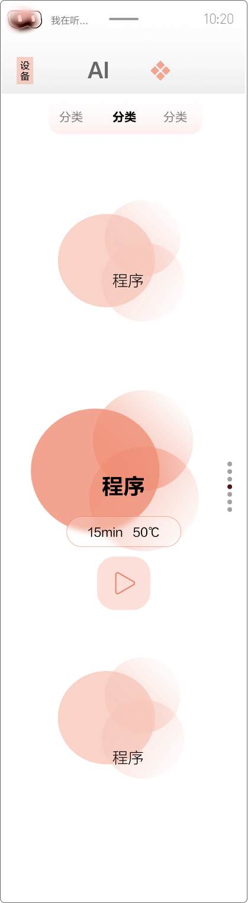
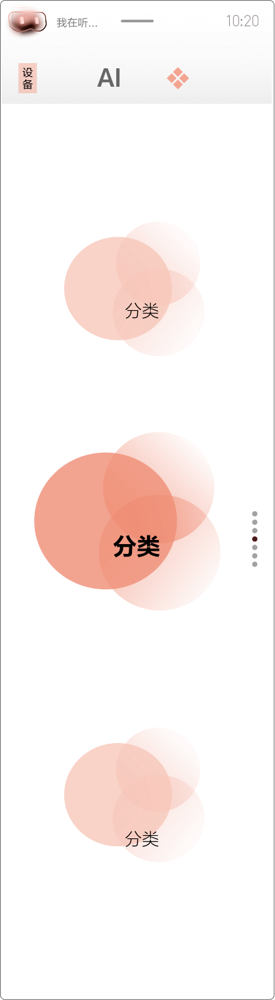
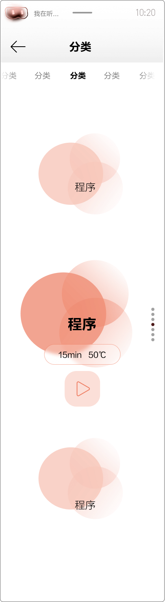
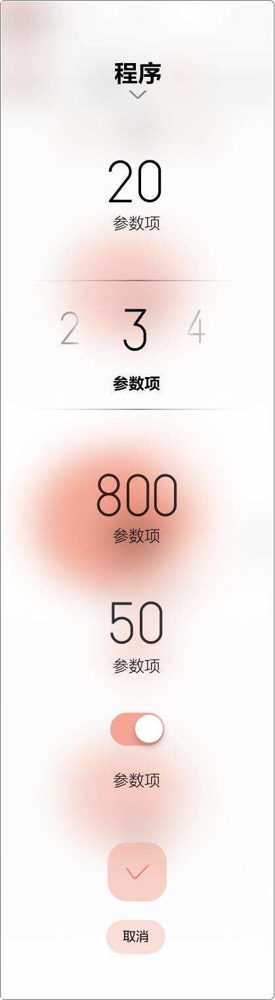
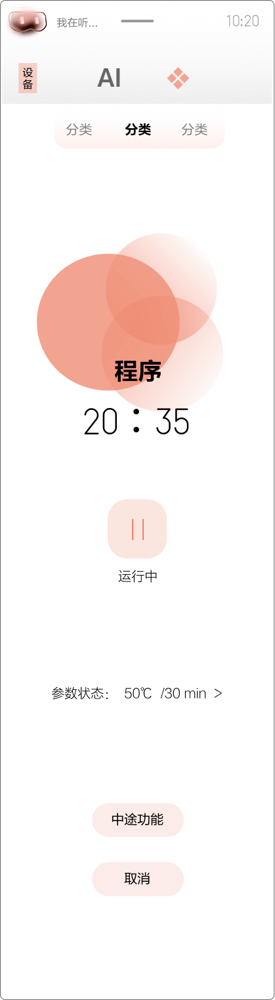
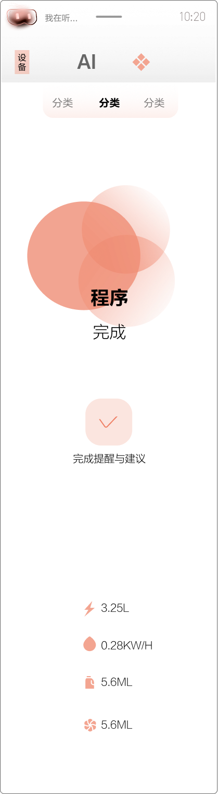
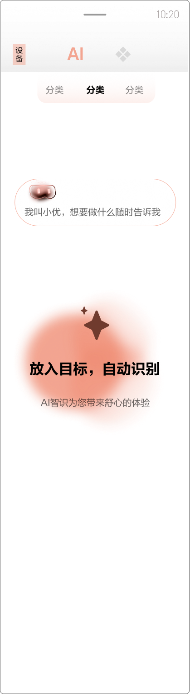
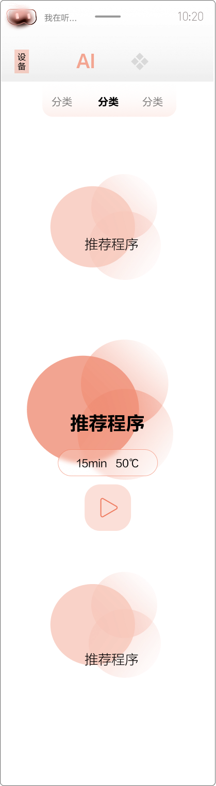